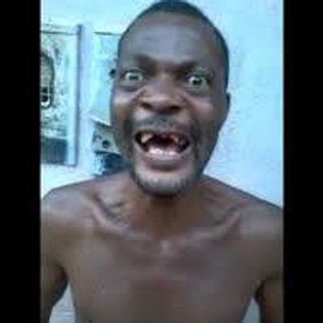
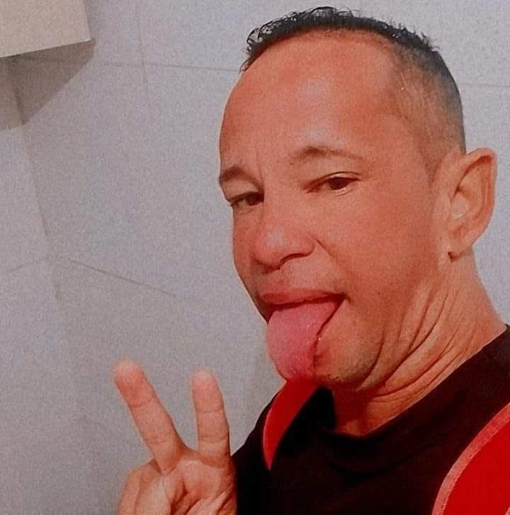
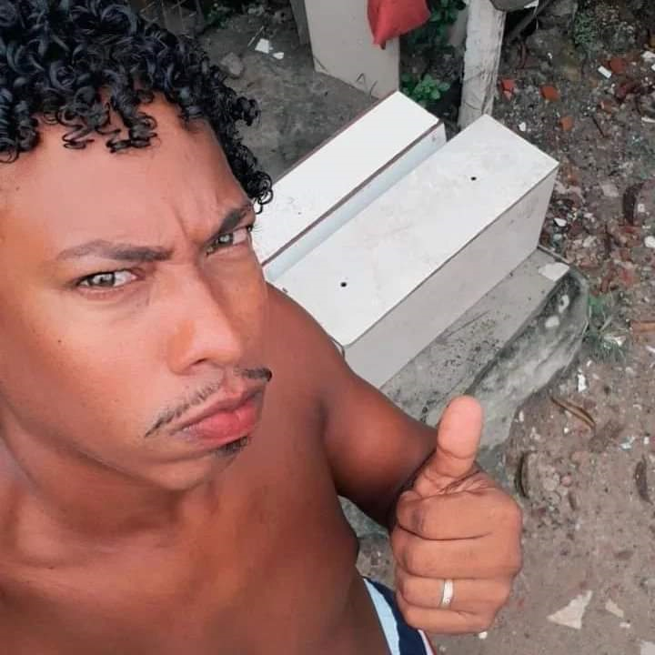
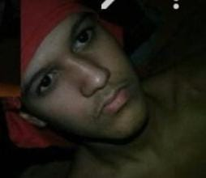
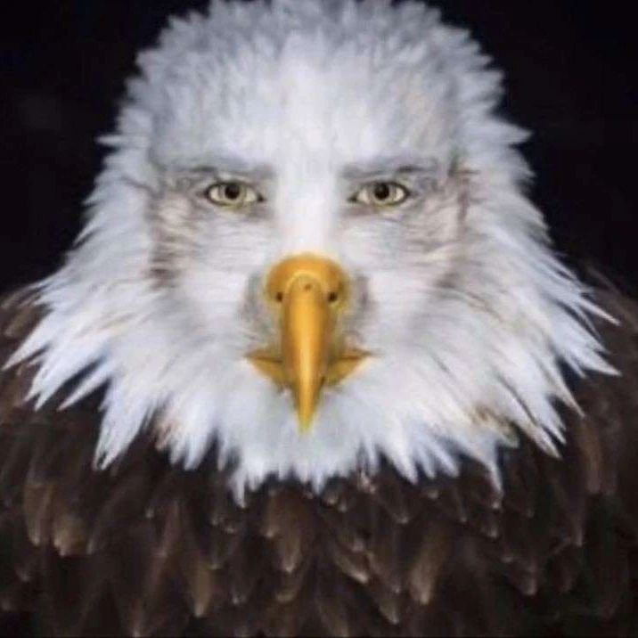
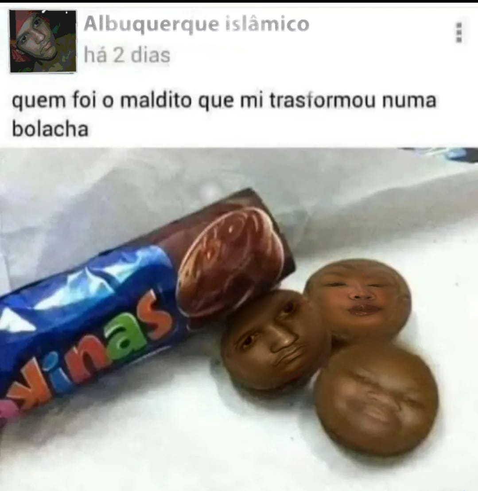
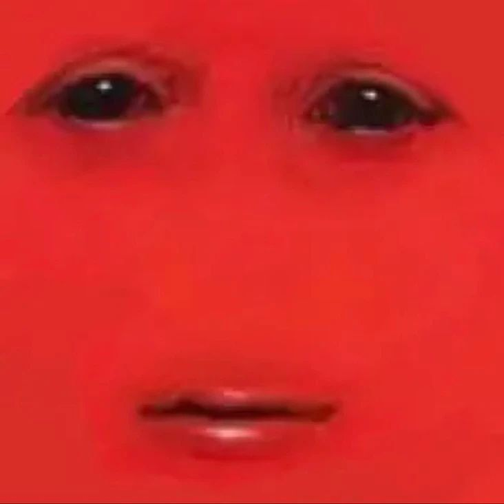
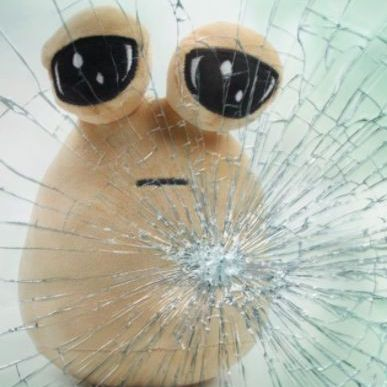
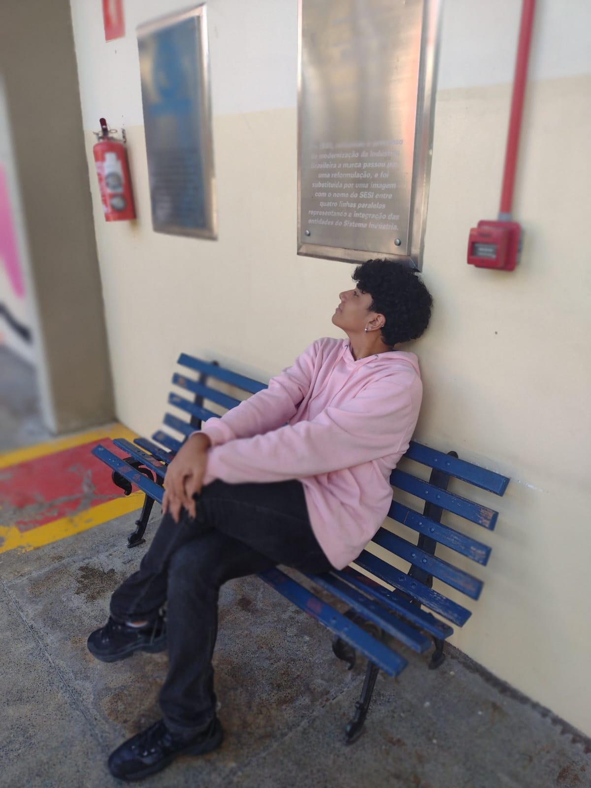

certo dia, nal do canal em sua busca para acabar com os pikomon

se encontrou com seu parceiro capetinha, que é um mestre em pikomons

enquanto eles procuravam incasavelmente por pikomons, aparece daniel chei dos plano

daniel chei dos plano informa que viu um pikomon falando várias men tira, então eles partem pra conferir

o men tira na verdade era de boa, e leva eles para seu mestre albuquerque do cv

após conhecer albuquerque, eles partem em direção a um pikomon malvado, o ava, a ave gigante

albuquerque do cv parte pra cima do ava, mas é transformado em biscoito, ficando incapacatido

impressionantemente, albuquerque do cv consegue lançar seu pikomon mais poderoso, o vermelhao

o vermelhao transforma o ava no pou e dá um tiro nele, acabando com a luta

talvez a história continua, talvez...
